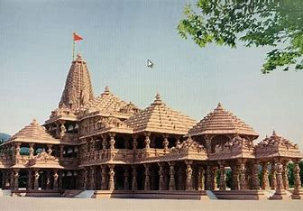
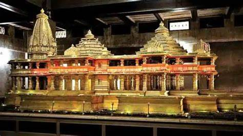
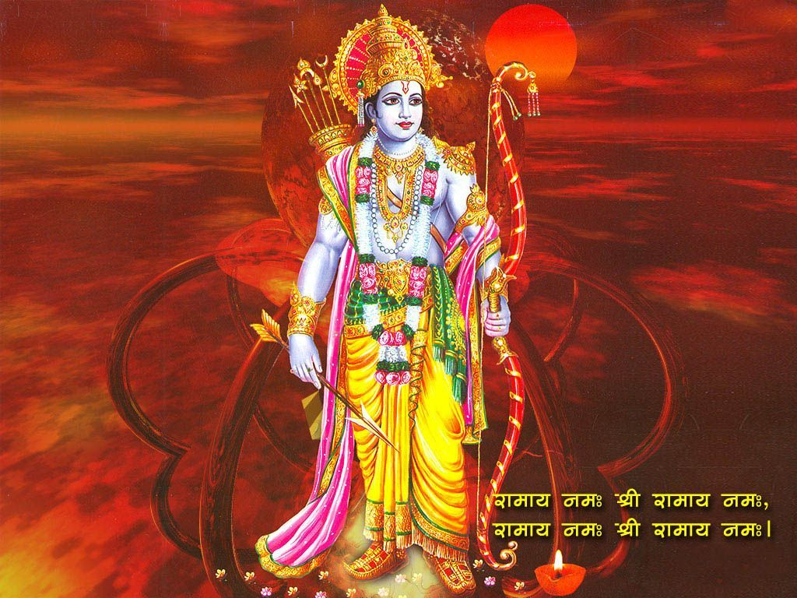

|  |  |  |
The Ram Mandir is a Hindu temple that is under construction in Ayodhya, Uttar Pradesh, India. It is located at the site of Ram Janmabhoomi, the hypothesized birthplace of Rama, a principal deity of Hinduism. The temple is being built by the Shri Ram Janmabhoomi Tirth Kshetra Trust. The construction of the temple began on August 5, 2020, and the pran pratishtha (consecration) ceremony is scheduled on January 22, 2024.
The temple will be 161 feet tall, making it one of the tallest temples in India. The temple will be built using pink sandstone and will be spread across an area of 2.7 acres. The temple will have one main temple and six smaller shrines dedicated to other Hindu deities.
The Ram Mandir has a long and controversial history. The site was the former location of the Babri Masjid, a mosque built by the Mughals in the 16th century. In the 1980s, the Vishwa Hindu Parishad (VHP), belonging to the Hindu nationalist family Sangh Parivar, launched a new movement to reclaim the site for Hindus and to erect a temple dedicated to the infant Rama (Ram Lalla) at this spot. In November of 1989, the VHP laid the foundations of a temple on land adjacent to the disputed mosque. This led to a series of violent clashes between Hindus and Muslims, culminating in the demolition of the Babri Masjid by Hindu extremists on December 6, 1992. The incident led to widespread communal violence across India, resulting in the deaths of over 2,000 people.